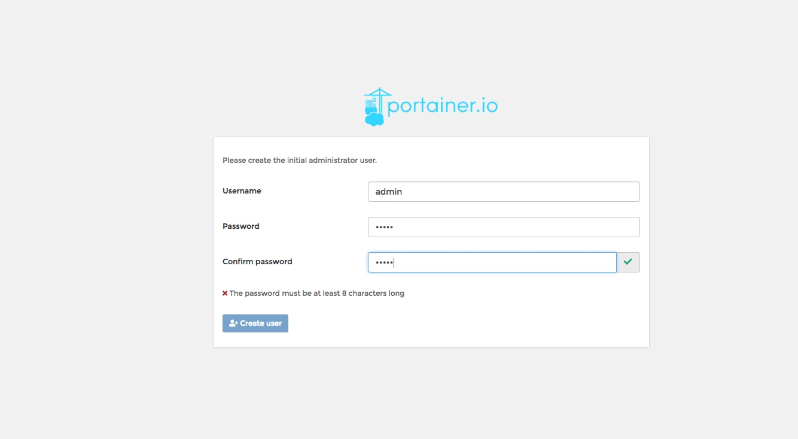
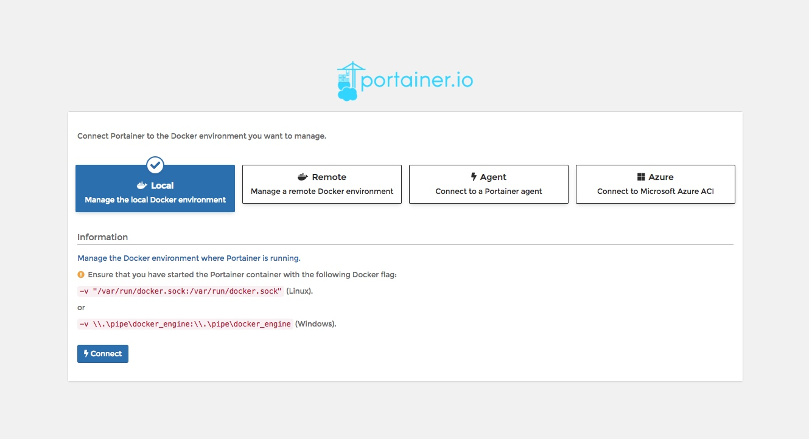
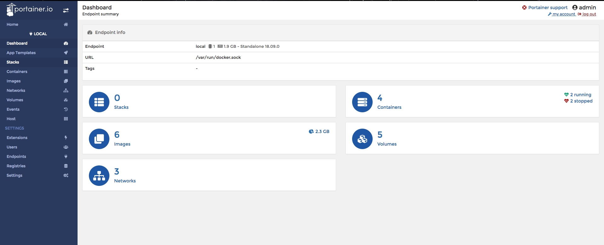
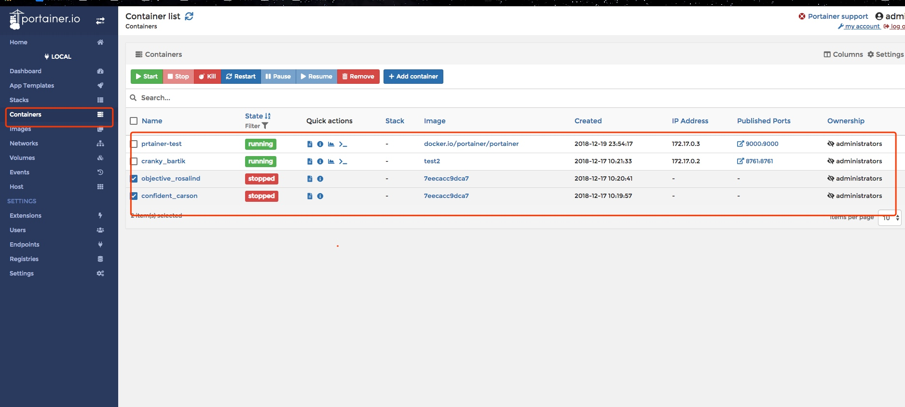

Portainer介绍
Portainer是Docker的图形化管理工具，提供状态显示面板、应用模板快速部署、容器镜像网络数据卷的基本操作（包括上传下载镜像，创建容器等操作）、事件日志显示、容器控制台操作、Swarm集群和服务等集中管理和操作、登录用户管理和控制等功能。功能十分全面，基本能满足中小型单位对容器管理的全部需求。
下载Portainer镜像
1
2
3
4
5
6
7
| [root@dockerfiledev ~]# docker pull docker.io/portainer/portainer
Using default tag: latest
latest: Pulling from portainer/portainer
d1e017099d17: Pull complete
8f8668d9390b: Pull complete
Digest: sha256:339b6486297050179418c886272f3262794b54513008a7f8e747c5e8f330338d
Status: Downloaded newer image for portainer/portainer:latest
|
单机版运行环境
如果仅有一个docker宿主机，则可使用单机版运行，Portainer单机版运行十分简单，只需要一条语句即可启动容器，来管理该机器上的docker镜像、容器等数据。
1
2
3
4
5
6
| [root@dockerfiledev ~]
> --restart=always \
> -v /var/run/docker.sock:/var/run/docker.sock \
> --name prtainer-test \
> docker.io/portainer/portainer
34b94520237f8cfe5a7b81bf36d0fc6a056200c5c9117e3d4420c8862bb9a0f8
|
查看服务是否正常：
1
2
3
4
5
6
| [root@dockerfiledev ~]
tcp6 0 0 :::9000 :::* LISTEN 18114/docker-proxy
[root@dockerfiledev ~]
CONTAINER ID IMAGE COMMAND CREATED STATUS PORTS NAMES
34b94520237f portainer/portainer "/portainer" 36 seconds ago Up 34 seconds 0.0.0.0:9000->9000/tcp prtainer-test
c7348634362a test2 "java -Djava.securit…" 2 days ago Up 27 minutes 0.0.0.0:8761->8761/tcp cranky_bartik
|

单机版这里选择local即可，选择完毕，点击Connect即可连接到本地docker：

注意：该页面上有提示需要挂载本地 /var/run/docker.socker与容器内的/var/run/docker.socker连接。因此，在启动时必须指定该挂载文件。
首页：

容器列表：

点击容器列表中的容器名Name，即可查看容器详情：